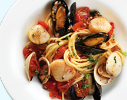
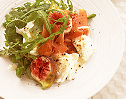
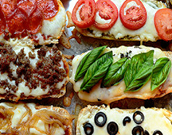

Cafe & Bar 西洞院｜京都市中京区三条西洞院｜カフェ & バー
CAFE MENU
BAR MENU
RESERVATION
ABOUT US
ACCESS
NEWS
MEMBERS



イカとツナのサラダ
820yen
シーザーサラダ
820yen
生ハムサラダ
920yen
濃厚チーズのカルボナーラ
920yen
キャベツとアンチョビのペペロンチーノ
920yen
ニンニクとトマトソース
920yen
チキンバジル
970yen
シーフードトマトクリーム
970yen
バケットピザ チーズ +
トマト
バジル
オニオン
ガーリック
オリーブ
サラミ
ミート
piece
420yen
オリーブ
280yen
ポテト
550yen
カプレーゼ
550yen
生チョコオレンジタルト
650yen
ピーチタルト
650yen
コーヒー（HOT・ICE）
450yen
紅茶（HOT・ICE）
450yen
ブラットオレンジ
450yen
アップルジュース
450yen
ジンジャエール（甘・辛）
450yen
Red Bull
500yen
コロナ
700yen
ジーマ
700yen
ワイン 白
フラスカティ カンネリーノ
赤
ピノ・ノワール・シレーニ
スパークリング
アスティ・スプマンテ
bottle 3,000yen
オリジナル サングリア
白×ピーチ
白×マンゴー
赤×オレンジ
赤×いちご
glass 650yen